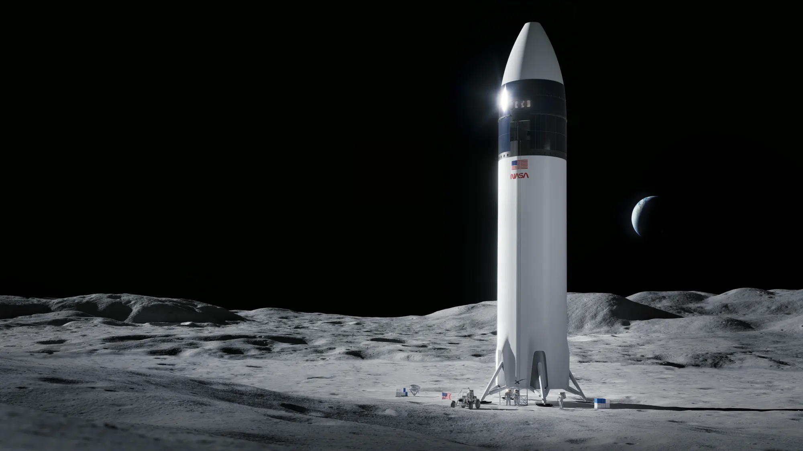

Why Spaceflight?
For our final project, we decided to delve into the captivating world of spaceflight. This realm extends beyond mere science and technology; it encapsulates our aspirations and our unwavering quest to transcend the boundaries of Earth. Spaceflight represents that magical fusion of cutting-edge engineering and sheer human determination, enabling us to break free from our terrestrial constraints and embark on extraordinary ventures into the vast expanse of space.
Consider the transformative impact spaceflight has had on our understanding of the cosmos. Those powerful rockets and sleek spacecraft that grace the skies are not merely feats of engineering; they are our passports to the grand cosmic spectacle. They have propelled us to the moon, established our cosmic outpost, the International Space Station, and even granted us fleeting glimpses of distant galaxies.
And the benefits of spaceflight technology extend far beyond celestial observations. Ever used GPS for navigation? That's all thanks to satellites orbiting our planet, a direct consequence of spaceflight advancements. It's remarkable how much we depend on these innovations for daily activities like weather forecasting, global communications, and even watching live events from across the globe.
Let's not, however, overlook the human dimension of spaceflight. Those astronauts suiting up and embarking on their cosmic journeys are not just travelers; they are the bearers of our collective hopes and dreams. The Apollo Moon landings, for instance, transcended the act of planting a flag on the lunar surface; they were monumental milestones that showcased our boundless potential.
The ISS stands as another testament to human ingenuity – a floating laboratory where astronauts from diverse nations collaborate to push the boundaries of science in ways unimaginable on Earth. The fascination doesn't end there. Space probes like those traversing Mars or venturing into the outer realms operate as our cosmic detectives. They are out there unraveling the mysteries of other worlds, expanding our understanding of our solar system's history and the possibility of extraterrestrial life.
And now, spaceflight is ushering in a new era, characterized by reusable rockets and the burgeoning space tourism industry. It's no longer just about exploration; it's about making space more accessible, paving the way for new business opportunities, and igniting a surge of technological innovation.
Rocket Image. Source: SpaceX https://www.nasa.gov/news-release/as-artemis-moves-forward-nasa-picks-spacex-to-land-next-americans-on-moon/
Conclusion
In conclusion, spaceflight stands as a monumental achievement for humanity. It empowers us to venture deep into the cosmos, expand our scientific knowledge, and test the limits of our capabilities. Whether it's deploying satellites, exploring the cosmos with human crews, or embarking on missions to far-off destinations, spaceflight has revolutionized our perception of the universe and ignited an insatiable thirst for exploration.